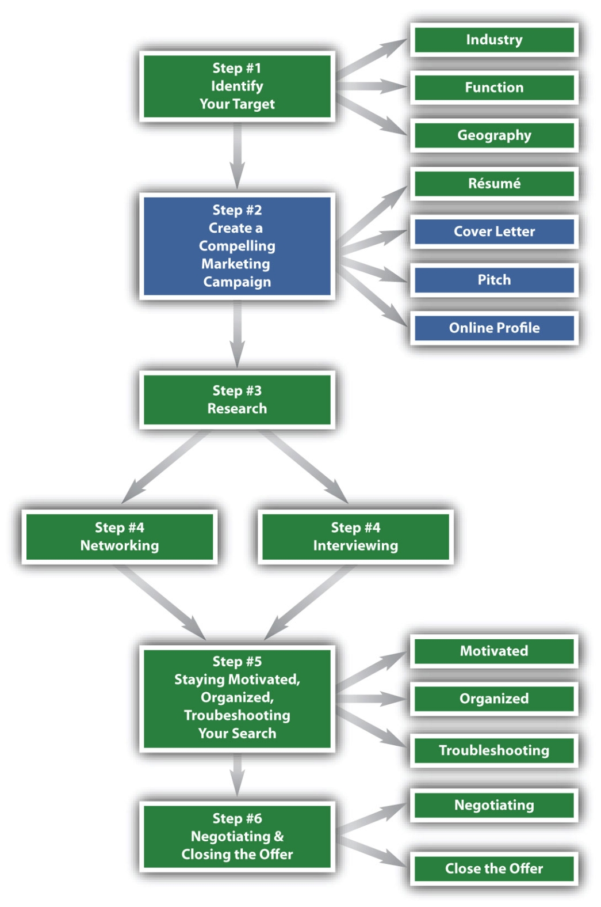

Figure 5.1 The Six-Step Job Search Process—Step 2
A Compelling Marketing Campaign Is More Than a Résumé
At this point in your search, you have completed Step 1, Identifying Your Target, by focusing on a specific industry, function, and geography.
You have also completed half of step 2 (create a compelling marketing campaign) by creating your résumé.
Now it’s time to complete your marketing campaign, which will create additional job search tools that will get the attention of your target companies and identify yourself as the best candidate available—that is, the person who can produce for them in a meaningful way.
The marketing component of your job search should be compelling, innovative, and of the highest quality. Think about how Apple markets their products. At first sight of the Apple logo—an apple with a bite out of it—you think of a sleek, innovative, quality product. You know that consumers are enjoying Apple iPads and iPods whether they are in New York or New Zealand, in the United States or in the United Kingdom—the marketing is that ingenious.
It should be the same with the remainder of your job search marketing campaign. A prospective employer’s impression of you should be crystal clear in terms of the quality associated with your name, your abilities, and your overall candidacy, even before they meet you. Your marketing campaign will set the stage for these quality interactions, especially step 4 (networking and interviewing) and step 6 (negotiating and closing the offer). But let’s not get ahead of ourselves.
Creating a compelling marketing campaign is composed of four distinct tools that can construct a strong, effective, and successful job search:
It’s important to note that Step 2, Create a Compelling Marketing Campaign, is the second step because it is introductory in nature. Your marketing campaign introduces you to future employers and positions you for success. The better the quality of your marketing, the better will be your interactions with future employers. Just like creating a strong and successful brand, creating a marketing campaign will enable you to present yourself to potential employers in the best possible way. Step 2 is about getting their attention long enough to propel your job search forward.
Your marketing campaign must have high-quality standards because it forms the very first impression an employer will have of you. It also represents you when you are not present, so your marketing components are important:
The better the quality of the preceding items, the better your chances of being interviewed and subsequently hired. None of these elements should have any errors whatsoever. All should be well written, showing your strong command of the English language. Whether your writing skills are exceptional or abysmal, all elements of your marketing campaign need to be double- and tripled-checked by someone who is knowledgeable about this process: an advisor at your learning institution’s career services, a trusted and competent peer or friend, or a professional career coach. This chapter will give you the tools necessary to construct all elements, but they must be checked and checked again to ensure quality.
High-quality marketing is especially important in down economies, when recruiters literally look for reasons to discard someone’s candidacy. Do not give them such a reason. Many cover letters are sent in haste without proofreading each detail. Some are even addressed to the wrong company: cover letters addressed to Goldman Sachs end up in the hands of a Citigroup recruiter, and many addressed to The Wall Street Journal are sent to The Washington Post. Marketing documents have a way of blinding proofreading abilities because candidates tend to look at them so often they lose their ability to identify errors. Pay attention to the details, spell check, and check again by reading each sentence out loud. Errors of any kind are immediate cause for discarding an otherwise qualified candidate. Quality should always preempt quantity.